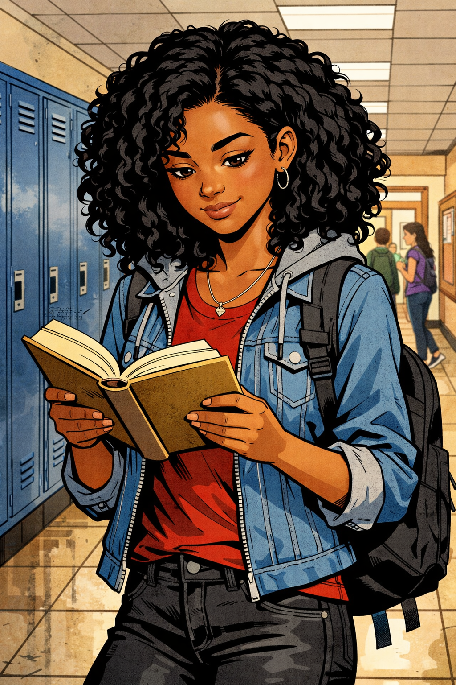
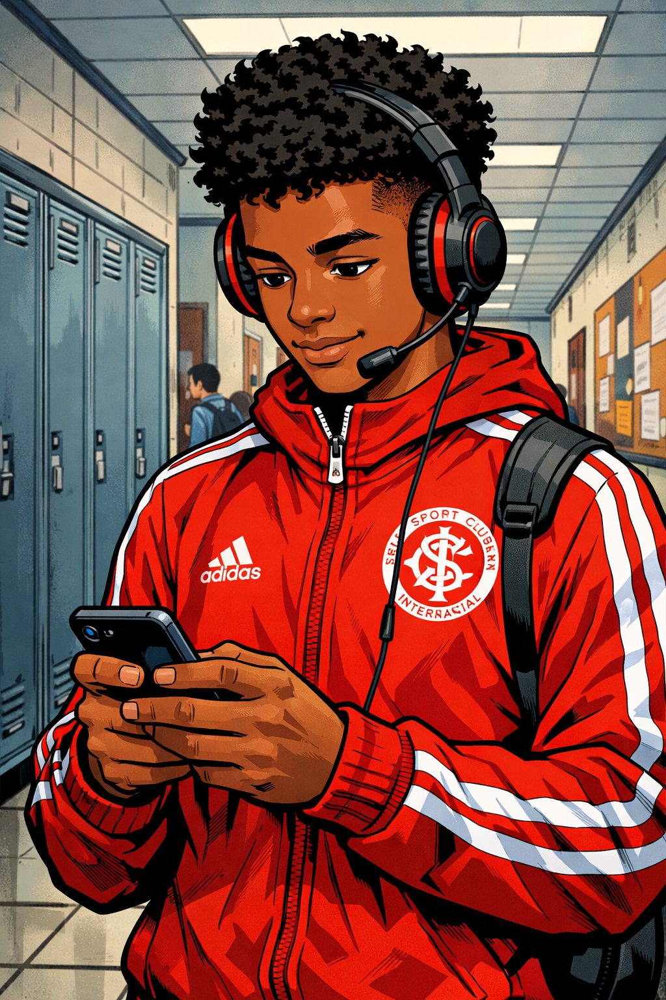
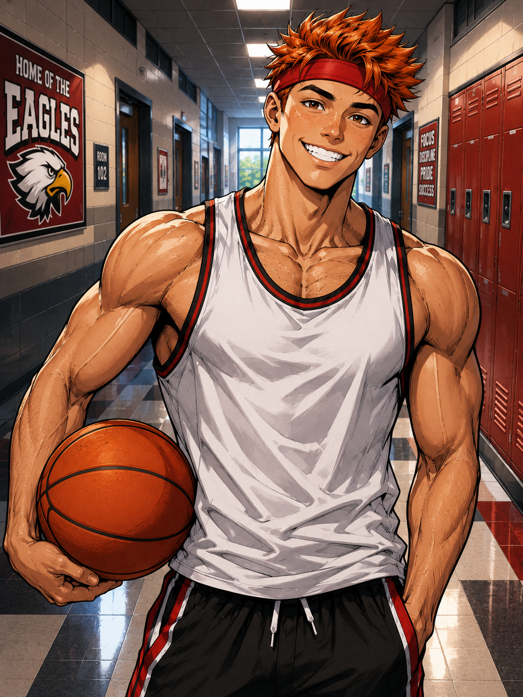
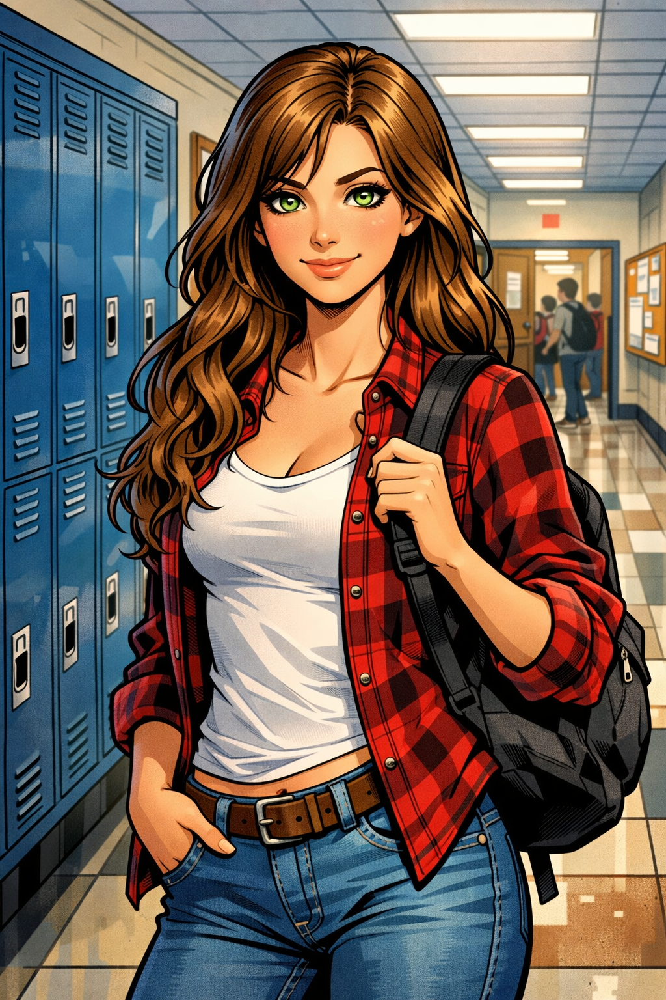
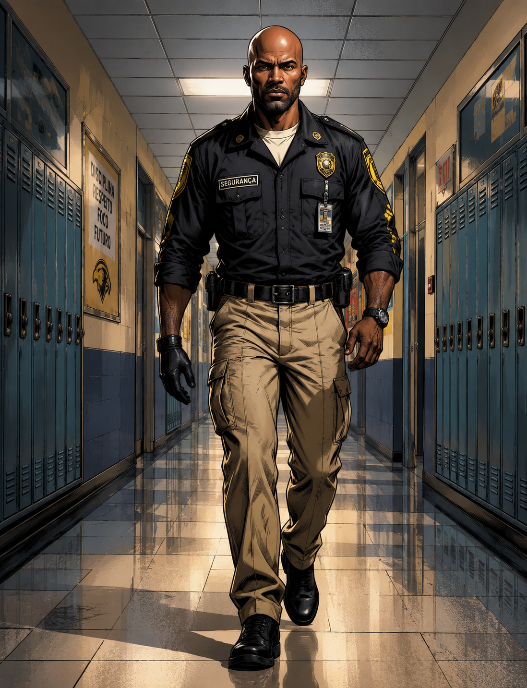

Personagens:
Ezequiel
-
Bianca

Melhor amiga de Ezequiel. Uma garota mais reservada e que constantemente está lendo alguma coisa. As vezes pode ser um pouco ignorante mas muitas vezes não é sua verdadeira intenção.
-
Lucas
-
Larissa
-
Baltazar
-
Diego

Um garoto extrovertido que ingressou no Instituto de Ensino e Saber Integral(IESI). Grava vídeos e faz lives em seu tempo livre.

Tipico aluno que se importa mais com as atividades físicas da escola do que com as aulas propriamente ditas. É mais fácil ver um cachorro girando um bambole do que ver ele em sala de aula.

Veterana de Ezequiel, Bianca e Lucas. Típica garota popular que todos gostam, presidente do conselho estudantil da escola, gentil, educada e constantemente emana uma energia positiva.
Gótico misterioso que aparece na escola.Não se sabe nada sobre ele.Tem uma expressão fechada e uma marca de queimadura no rosto tapada pelo cabelo comprido.

Um dos guardas do instituto. Vive cuidando as ações de Ezequiel e Lucas. As vezes eles conseguem fazer ele se soltar um pouco,mas a maioria das vezes está de cara fechada.Geralmente trabalha no período da noite.